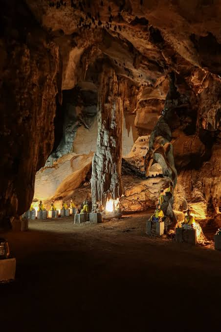

ข้อมูลการเดินทาง
แนวทางการเตรียมตัวเดินทางไปจุดท่องเที่ยวในจังหวัดประจวบคีรีขันธ์ เช่น ถ้ำม้าร้อง อำเภอบางสะพาน
แผนที่และเส้นทางท่องเที่ยว

ก่อนออกเดินทาง
- สถานที่แนะนำ: ถ้ำม้าร้อง อำเภอบางสะพาน จังหวัดประจวบคีรีขันธ์
- ค้นชื่อสถานที่จริงในแอปแผนที่ (เช่น ถ้ำม้าร้อง อ.บางสะพาน) เพื่อตรวจสอบเส้นทางและระยะทางก่อนออกเดินทาง
- ตรวจสอบเวลาเปิด-ปิด เงื่อนไขการเข้าชม และวันหยุดจากผู้ดูแลสถานที่หรือหน่วยงานในพื้นที่
- ตรวจสอบจุดจอดรถ จุดลงรถโดยสาร สภาพเส้นทาง และเตรียมไฟฉาย รองเท้าที่เดินสะดวก รวมถึงน้ำดื่มให้พร้อม
แหล่งข้อมูล
ททท. สำนักงานประจวบคีรีขันธ์ (TAT Prachuap Khiri Khan) — แผ่นประชาสัมพันธ์ 10 ที่เที่ยวประจวบคีรีขันธ์ ฤดูท่องเที่ยวธรรมชาติ #2 (ข้อมูลถ้ำม้าร้อง อ.บางสะพาน โทร. 032 513 885 ตรวจสอบล่าสุด พฤศจิกายน 2569)